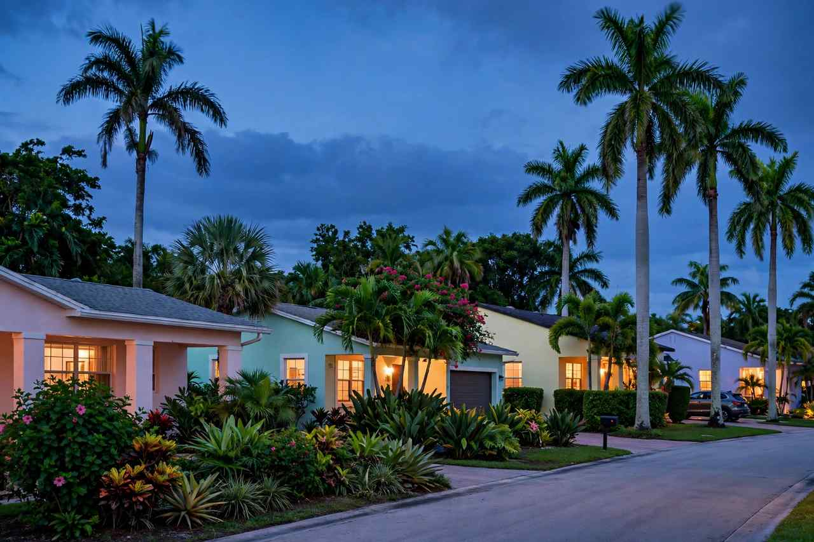

Rodent Control · Dunnellon, FL
Trusted Rodent Control in Dunnellon, FL
Murvo delivers same-day rodent control in Dunnellon for rats and mice in attics, walls, kitchens, and crawl spaces. Local crews start with a thorough inspection, then remove, exclude, and monitor until the problem is solved. You approve one flat-rate price in writing before any work starts, and every job carries a written guarantee across Marion County. Local crews cover 2 ZIP codes in the Dunnellon area, from On Top of the World Designated Place to the far side of Marion County.
24/7Availability
2ZIP codes covered
Same-dayResponse
Licensed · Upfront options · Written guarantees · Fully insured
Dunnellon at a glance
Local Rodent Control for Dunnellon, FL.
Marion County
Countynortheast Florida
RegionOcala · 19 mi
Nearest metro146 miles southeast of Tallahassee
From Tallahassee2
ZIP codes covered Service by service in Dunnellon
Rodent Control Services Available in Dunnellon
Rodent-only specialists serving Dunnellon and Marion County. Every service below is explained in local terms - the species involved, the entry points that matter in ranch and stucco homes, waterfront and canal homes, condos, and vacation rentals, and the seasonal timing that decides whether a fix lasts.
- 01Rodent Control↗
- 02Rodent Inspection↗
- 03Rodent Removal↗
- 04Rodent Exclusion↗
- 05Rodent Proofing↗
- 06Rat Control↗
- 07Mice Control↗
- 08Mouse Removal↗
- 09Rat Removal↗
- 10Rodent Trapping↗
- 11Rodent Baiting↗
- 12Rodenticide Application↗
- 13Attic Rodent Removal↗
- 14Crawl Space Rodent Removal↗
- 15Wall Rodent Removal↗
- 16Kitchen Rodent Control↗
- 17Garage Rodent Control↗
- 18Commercial Rodent Control↗
- 19Residential Rodent Control↗
- 20Emergency Rodent Removal↗
- 21Same-Day Rodent Control↗
- 22Rodent Damage Repair↗
- 23Rodent Waste Cleanup↗
- 24Rodent Disinfection↗
- 25Rodent Odor Removal↗
- 26Dead Rodent Removal↗
- 27Rodent Dropping Cleanup↗
- 28Rodent Exclusion for Roofs↗
- 29Rodent Exclusion for Vents↗
- 30Rodent Exclusion for Chimneys↗
Rodent Control in Dunnellon
Rodent Control in Dunnellon
In Dunnellon, ranch and stucco homes, waterfront and canal homes, condos, and vacation rentals give rodents warmth, shelter, and easy routes through rooflines, eaves and soffits, attic and gable vents, pool equipment areas, and garage door seals, especially once nights turn cold across Marion County. Our licensed, insured technicians identify the species, map active runways, and build a control plan around your home rather than a generic spray. Every visit is documented with photos, trap records, and clear next steps for your household.
When you need rodent control in Dunnellon, the job starts with what is actually happening in your part of Marion County. Murvo crews work Dunnellon every week, so they know how Roof rat (Rattus rattus) and Norway rat (Rattus norvegicus) behave around ranch and stucco homes, waterfront and canal homes, condos, and vacation rentals here - and where they get in: rooflines, eaves and soffits, attic and gable vents, pool equipment areas, and garage door seals. We arrive equipped for the full job, confirm the flat rate in writing before work begins, and cover the whole Dunnellon area, including Rainbow Springs, Citrus Springs. No call-center runaround and no open-ended hourly billing - just a local crew, a clear plan, and a written quote you approve first. Homes near On Top of the World Designated Place tend to show activity first in Dunnellon, which is why inspections start with rooflines, eaves and soffits, attic and gable vents, pool equipment areas, and garage door seals.
Our process follows five stages: Inspect, Remove, Exclude, Clean, and Monitor. A technician first checks the attic, crawl space, garage, and kitchen, recording droppings, nests, gnaw marks, and entry gaps with photos. Active animals are cleared with targeted trapping matched to the species, then openings around pipes, vents, and rooflines are sealed with copper mesh, hardware cloth, and metal flashing. Contaminated areas are cleaned safely, and monitoring visits confirm activity has stopped before we sign the job off. You approve every stage in advance, in writing.
Booking takes one call, and same-day appointments are available in most Dunnellon areas. Work is carried out in stages, with trap checks and sealing visits booked ahead. At the final visit we walk the finished work together and confirm monitoring is clear. Your technician inspects first, talks you through the plan in plain language, and only starts once you approve the written quote. Questions are answered at every stage, day or night.
In most of Dunnellon, we can offer a same-day appointment for rodent control, and our lines are open 24/7 for urgent cases like scratching in the walls or a rodent in a living area. Your technician inspects first, explains the plan, and quotes a flat rate in writing before any work begins, so help starts fast without surprises. Around Dunnellon, ranch and stucco homes, waterfront and canal homes, condos, and vacation rentals give rodents the most cover, which is why entry points get checked before traps are set.
The honest answer is that it depends on species, activity level, and how much sealing your home needs, which is why Murvo inspects first and then gives you a flat-rate quote in writing. For national context only, Angi's 2026 data averages rat and mouse removal and control at $396, typically $189 to $655; that is not a Murvo price, and your written quote is the figure you pay.
Rodent Inspection in Dunnellon
Rodent Inspection in Dunnellon
Most Dunnellon inspections start with uncertainty: a noise, a smell, a few droppings that might be old. Murvo turns that uncertainty into a written record. A rodent inspection checks attic, crawl space, roofline, and foundation, photographs the evidence, and ends with a flat-rate written quote for anything worth fixing.
In Dunnellon, rodent inspection is not a generic spray-and-go service. Rodents exploit rooflines, eaves and soffits, attic and gable vents, pool equipment areas, and garage door seals in ranch and stucco homes, waterfront and canal homes, condos, and vacation rentals, and a fix that ignores those routes does not last. Murvo's Dunnellon team inspects first, shows you the evidence - droppings, gnaw marks, entry gaps - and then lays out the work with a flat-rate written quote. We serve all of Marion County from Dunnellon, including Rainbow Springs, Citrus Springs, and every job is covered by our written workmanship guarantee. Seasonal timing matters for rodent inspection in Dunnellon: Rodents are active year-round in Dunnellon because there is no hard freeze.
Timing often tells the story first. Noises at dusk suggest one pattern; droppings near stored food suggest another. Technicians use what you report to focus the search, then verify it against physical evidence throughout ranch and stucco homes, waterfront and canal homes, condos, and vacation rentals. They check wiring and insulation for damage, test whether gaps at rooflines, eaves and soffits, attic and gable vents, pool equipment areas, and garage door seals are active, and mark each opening by size and species. The written report that follows ranks repairs clearly, so decisions rest on findings rather than guesswork or pressure. Each recommendation in that report traces back to a photographed finding, keeping the whole assessment accountable.
Booking a rodent inspection in Dunnellon takes one call, and same-day appointments are often available. Nothing proceeds without your approval, and urgent items are clearly flagged. Your technician arrives on time, walks the property with you, and inspects the attic, crawl space, and exterior in one visit. Findings are explained with photos before you receive a flat-rate written quote for any recommended work. You keep the full written report either way.
You do not have to wait days for answers in Dunnellon. Same-day rodent inspection appointments are available in most areas, urgent calls are taken 24/7, and most home inspections take under an hour. You finish the visit with photos, written findings, and flat-rate pricing for anything we recommend. Murvo's Dunnellon crews explain the finding either way, and the flat-rate quote leaves the decision with you.
Nationally, a professional rodent inspection typically runs $100 to $200 according to Angi's 2026 data, and it is often credited toward the job if you proceed. Murvo confirms your exact rodent inspection price before the visit and quotes any follow-up work as a flat rate in writing after inspection, so the figure you approve is the figure you pay, with no hourly billing.
Rodent Removal in Dunnellon
Rodent Removal in Dunnellon
Finding droppings in the kitchen or hearing scratching overhead in Dunnellon means rodents are already living indoors, and they will not leave on their own. Murvo's rodent removal clears active Roof rat (Rattus rattus) and Norway rat (Rattus norvegicus) with targeted trapping, removes animals hygienically, and closes the entry points behind them. One flat-rate written quote covers the program before work begins.
Homeowners in Dunnellon call Murvo for rodent removal because the problem here is specific: Roof rat (Rattus rattus) pressure around ranch and stucco homes, waterfront and canal homes, condos, and vacation rentals, tight access at rooflines, eaves and soffits, attic and gable vents, pool equipment areas, and garage door seals, and activity that follows the local season. Our Marion County crews diagnose the real source before recommending work, explain the options in plain language, and quote one flat rate in writing. Across Dunnellon - including Rainbow Springs, Citrus Springs - every visit is backed by licensed, insured technicians and our written workmanship guarantee. Around On Top of the World Designated Place and On Top of the World Designated Place, Beverly Hills, Rainbow Springs, the pattern is similar: Norway rat (Rattus norvegicus) finds rooflines, eaves and soffits, attic and gable vents, pool equipment areas, and garage door seals first, and lasting rodent removal has to close those routes.
Why trap first instead of reaching for poison? Because trapped animals can be counted, removed, and disposed of hygienically, while poisoned animals can die where nobody can reach them. Contaminated nesting material is bagged carefully, affected surfaces are disinfected before any cleaning, and dry sweeping of droppings is never used, since that spreads contamination into the air. Technicians therefore match traps to species and setting, work attics, voids, and kitchens in sequence, and retrieve any carcass promptly. The sequence ends with monitoring, because removal without a confirming check is a claim rather than a result.
Once removal is underway, expect short, predictable visits. When catches reach zero, monitoring confirms it, sealing is discussed, and the job closes with a walkthrough and your guarantee paperwork in hand before we leave. Your technician checks each mapped trap, removes catches hygienically, resets what is still needed, and updates the record with you. At close, prevention advice is tailored to what actually attracted rodents to your property, not copied from a generic checklist.
When rodents are active indoors in Dunnellon, waiting rarely helps. Rodent removal can usually start the same day you call, our line answers 24/7 for a rodent loose in a living area, and the first visit sets traps straight away. Scheduled returns then clear and reset them until monitoring shows the home is clear. Around Dunnellon, ranch and stucco homes, waterfront and canal homes, condos, and vacation rentals give rodents the most cover, which is why entry points get checked before traps are set.
Cost depends on the species, how many animals are active, and how much sealing the home needs afterwards, so Murvo inspects first and quotes one flat rate in writing. For national context only, Angi's 2026 data averages rat and mouse removal at $396, typically $189 to $655. That benchmark is not a Murvo price; your written quote is the exact figure.
Rodent Exclusion in Dunnellon
Rodent Exclusion in Dunnellon
What makes sealing permanent rather than cosmetic? Material rodents cannot chew, fitted so weather cannot lift it. Murvo uses copper mesh, hardware cloth, and metal flashing where each belongs, installed by licensed and insured crews. Every finished seal is photographed, walked through with you, and covered by a written workmanship guarantee.
Homeowners in Dunnellon call Murvo for rodent exclusion because the problem here is specific: Roof rat (Rattus rattus) pressure around ranch and stucco homes, waterfront and canal homes, condos, and vacation rentals, tight access at rooflines, eaves and soffits, attic and gable vents, pool equipment areas, and garage door seals, and activity that follows the local season. Our Marion County crews diagnose the real source before recommending work, explain the options in plain language, and quote one flat rate in writing. Across Dunnellon - including Rainbow Springs, Citrus Springs - every visit is backed by licensed, insured technicians and our written workmanship guarantee. Around On Top of the World Designated Place and On Top of the World Designated Place, Beverly Hills, Rainbow Springs, the pattern is similar: Norway rat (Rattus norvegicus) finds rooflines, eaves and soffits, attic and gable vents, pool equipment areas, and garage door seals first, and lasting rodent exclusion has to close those routes.
Start with a hard rule: nothing gets sealed while animals remain inside. Door sweeps close the obvious routes, and smaller cracks receive durable sealant chosen for exterior exposure. Technicians confirm the home is clear through trapping and monitoring, then survey the structure junction by junction, because seams between materials open as buildings settle. Each opening receives its own treatment, from packed copper mesh in irregular gaps to hardware cloth across vents and flashing at roof junctions. A written inventory ties each photograph to a location, so future checks can revisit precisely the same points.
The visit starts with a check that no animals remain inside, using trapping and monitoring where needed. Once clear, your background-checked crew seals the agreed openings with chew-resistant materials, working cleanly around your home. Before leaving, we show you each finished seal, explain how it was protected, and confirm the guarantee paperwork. A later re-check confirms the seals are holding and activity has stopped. You approve the finished work before we close the job.
Rodent exclusion in Dunnellon usually starts with a survey visit we can often schedule the same day you call. Sealing itself is booked as soon as any active animals are cleared, because nothing is sealed inside. Most homes are fully sealed within days, not weeks, and urgent entry points near wiring or food areas are prioritized first. In Marion County, most cases involve the Roof rat (Rattus rattus) and the Norway rat (Rattus norvegicus), so the inspection focuses on their routes first.
For national context, Angi's 2026 data puts basic exclusion at $200 to $600, depending on access and the number of openings. That is a benchmark, not a Murvo price. After surveying your Dunnellon home, we list every opening that needs sealing and quote one flat rate in writing, so you pay for the work your property actually needs and nothing more.
Rodent Proofing in Dunnellon
Rodent Proofing in Dunnellon
The best rodent problem is the one that never starts. Rodent proofing in Dunnellon hardens your home before Roof rat (Rattus rattus) and Norway rat (Rattus norvegicus) move in: sealing gaps, screening vents, fitting door sweeps, and removing the food and shelter that attract them. Murvo surveys the whole property, prioritizes the work, and gives one flat-rate written quote for the work.
Homeowners in Dunnellon call Murvo for rodent proofing because the problem here is specific: Roof rat (Rattus rattus) pressure around ranch and stucco homes, waterfront and canal homes, condos, and vacation rentals, tight access at rooflines, eaves and soffits, attic and gable vents, pool equipment areas, and garage door seals, and activity that follows the local season. Our Marion County crews diagnose the real source before recommending work, explain the options in plain language, and quote one flat rate in writing. Across Dunnellon - including Rainbow Springs, Citrus Springs - every visit is backed by licensed, insured technicians and our written workmanship guarantee. The Dunnellon crews who handle rodent proofing also handle the follow-through - proofing, cleanup, and monitoring - so one visit can close the whole problem.
Proofing starts with a whole-property assessment inside and out, from overhanging branches and cluttered garages to unsealed vents and gaps under doors. We also address attractants: securing pet food and bird seed storage, trimming vegetation away from walls, and clearing harborage. Every item is prioritized so essential work happens first. The plan typically combines structural sealing of utility entries and foundation cracks with mesh screening on vents, chimneys, and rooflines, plus door sweeps where light shows underneath. Photos show each weakness we find.
After booking, we confirm your appointment and any access needs, such as gates or attic hatches. On the day, your background-checked technician completes the survey and agreed proofing work in one visit where possible. Before leaving, you walk the finished sealing together, receive care and storage advice, and confirm the guarantee. Later re-checks verify sweeps, screens, and seals are still holding. Nothing is added to your bill without approval first.
Rodent proofing is preventive, so there is rarely a rush, but surveys in Dunnellon can often be arranged the same day you call, and always within a few days. Most proofing work is completed in a single visit once you approve the plan, and booking before colder weather gives your home protection ahead of the seasonal rush indoors. Murvo's Dunnellon crews explain the finding either way, and the flat-rate quote leaves the decision with you.
For national context, Angi's 2026 data puts exclusion, the core of proofing, at $200 to $600 for basic work. That figure is a benchmark, not a Murvo price. After surveying your Dunnellon property, we separate quick homeowner wins from specialist sealing and quote the professional work as one flat rate in writing, so you can stage spending sensibly.
Rat Control in Dunnellon
Rat Control in Dunnellon
In ranch and stucco homes, waterfront and canal homes, condos, and vacation rentals, rats exploit structure and routine together, traveling fences and pipes to reach food near rooflines, eaves and soffits, attic and gable vents, pool equipment areas, and garage door seals. Our rat control across Marion County checks attics, basements, drains, and outbuildings as one connected system, because treating a single room while harborage survives elsewhere simply moves the problem around the property.
In Dunnellon, rat control is not a generic spray-and-go service. Rodents exploit rooflines, eaves and soffits, attic and gable vents, pool equipment areas, and garage door seals in ranch and stucco homes, waterfront and canal homes, condos, and vacation rentals, and a fix that ignores those routes does not last. Murvo's Dunnellon team inspects first, shows you the evidence - droppings, gnaw marks, entry gaps - and then lays out the work with a flat-rate written quote. We serve all of Marion County from Dunnellon, including Rainbow Springs, Citrus Springs, and every job is covered by our written workmanship guarantee. The Dunnellon crews who handle rat control also handle the follow-through - proofing, cleanup, and monitoring - so one visit can close the whole problem.
Control starts with species and route identification, because roof rats and Norway rats behave and enter very differently. Technicians pre-bait unset traps along proven runways so wary rats feed confidently, then set them and return to check, clear, and adjust placements until activity stops. Trapped rats are removed hygienically, and each visit is documented with locations and counts. We then pair the program with roofline and entry-point exclusion, plus attic removal and cleanup where nests are found overhead. Progress is visible at every visit.
After booking, we confirm access to attics, basements, and outbuildings so the first visit is productive. On arrival, your background-checked technician walks the property with you, sets out the plan, and starts pre-baiting straight away once you approve the quote. Follow-up visits are booked ahead, trapped rats are removed promptly, and a final monitoring check verifies the result before sign-off under our written workmanship guarantee. You see documented progress at each visit.
Call day or night — urgent rat control calls in Dunnellon are answered 24/7, and a same-day inspection can usually start the program. Pre-baiting begins on that first visit once you approve the written quote, traps are set when rats are feeding confidently, and scheduled checks continue until activity stops. In Marion County, activity follows the local season, so timing the work matters as much as the method.
Species, colony size, and the number of entry points to seal all affect rat work, which is why Murvo inspects first and quotes one flat rate in writing. Angi's 2026 figures, given for national context only, average rat control and removal at $396 and typically run $189 to $655; the written quote for your Dunnellon home is the exact price.
Mice Control in Dunnellon
Mice Control in Dunnellon
Small rice-like droppings, shredded nesting material, and faint scratching after dark are the classic signs mice have moved into a Dunnellon home. Murvo's mice control surveys activity and entry points, traps in clusters along the routes mice travel nightly, and seals gaps as small as a pencil width. One flat-rate written quote covers the program before work begins.
Homeowners in Dunnellon call Murvo for mice control because the problem here is specific: Roof rat (Rattus rattus) pressure around ranch and stucco homes, waterfront and canal homes, condos, and vacation rentals, tight access at rooflines, eaves and soffits, attic and gable vents, pool equipment areas, and garage door seals, and activity that follows the local season. Our Marion County crews diagnose the real source before recommending work, explain the options in plain language, and quote one flat rate in writing. Across Dunnellon - including Rainbow Springs, Citrus Springs - every visit is backed by licensed, insured technicians and our written workmanship guarantee. The Dunnellon crews who handle mice control also handle the follow-through - proofing, cleanup, and monitoring - so one visit can close the whole problem.
The program starts with an activity and entry-point survey covering kitchens, attics, wall voids, and under-floor spaces. Traps are placed in clusters along baseboards, behind appliances, and in attic voids, because mice travel the same short routes nightly. Technicians return to clear and reset traps and track numbers until they reach zero. We then seal pencil-width gaps, including the overlooked routes behind baseboards and where pipes and wires pass through floors, and advise on cleaning scent-marked surfaces. Follow-up monitoring confirms the result before sign-off.
During the program, store opened food in sealed containers and keep trap areas undisturbed. Your background-checked technician returns to clear and reset clusters, adjusts placements if the pattern shifts, and completes sealing once numbers fall. At the end you review the catch record together, receive prevention advice, and confirm the written guarantee before close. Prevention notes cover the exact storage and sealing issues found at your home, making them practical rather than generic advice.
Mice multiply fast, so mice control in Dunnellon is built to start fast too: a survey can often be arranged the same day you call, with traps set on that first visit once the quote is approved. Because mice investigate new objects quickly, catches usually begin soon after, and check visits follow until a final confirmation shows activity has stopped. The written quote for your Dunnellon property will spell out exactly which of these applies before any work starts.
Mouse work is priced by the number of rooms affected and the amount of sealing involved, so Murvo surveys first and quotes one flat rate in writing. For national context only, Angi's 2026 data averages rat and mouse control and removal at $396, typically $189 to $655. That is not a Murvo price; your written quote is exact.
Mouse Removal in Dunnellon
Mouse Removal in Dunnellon
What does proper removal include beyond the traps themselves? Hygienic clearing of droppings and nesting, disinfection of affected cabinets, and sealing that stops the next mice using the same scent trails. Murvo delivers that complete finish with licensed, insured technicians and a written workmanship guarantee on the completed work.
When you need mouse removal in Dunnellon, the job starts with what is actually happening in your part of Marion County. Murvo crews work Dunnellon every week, so they know how Roof rat (Rattus rattus) and Norway rat (Rattus norvegicus) behave around ranch and stucco homes, waterfront and canal homes, condos, and vacation rentals here - and where they get in: rooflines, eaves and soffits, attic and gable vents, pool equipment areas, and garage door seals. We arrive equipped for the full job, confirm the flat rate in writing before work begins, and cover the whole Dunnellon area, including Rainbow Springs, Citrus Springs. No call-center runaround and no open-ended hourly billing - just a local crew, a clear plan, and a written quote you approve first. Seasonal timing matters for mouse removal in Dunnellon: Rodents are active year-round in Dunnellon because there is no hard freeze.
Trap-based removal is the default here for practical reasons. It is safer around children and pets, results are visible and countable, and no animal is left to die inside a hidden void. Cleanup follows the same care: droppings and nesting are never dry-swept, surfaces are disinfected first, and waste is bagged and removed hygienically. Once activity ends, access points are sealed thoroughly, and advice on storage and scent-trail cleaning helps the kitchen stay clear. Monitoring after sealing confirms the finish, so the result rests on evidence rather than a hopeful guess.
For urgent mouse problems in Dunnellon, contact Murvo for a same-day response where available. Return visits are scheduled to clear and reset traps, and cleanup and sealing follow once catches reach zero. The final visit confirms the result and your written workmanship guarantee. Your technician surveys the home, explains the multi-trap plan, and confirms a flat-rate written quote before starting. You are updated after every visit, without ever chasing us.
In Dunnellon, mouse removal can often begin the same day you call, especially where mice are active in kitchens or living areas. The first visit surveys nesting sites and sets traps immediately after you approve the quote; because mice investigate traps quickly, catches usually start fast, and return visits continue until numbers reach zero. A Dunnellon inspection confirms it on site - dropping size, gnaw marks, and entry points tell the story quickly.
Mouse removal cost reflects the number of rooms involved and how much sealing is needed, which is why Murvo surveys first and quotes a flat rate in writing. For national context only, Angi's 2026 data averages rat and mouse removal at $396, typically $189 to $655. That benchmark is not a Murvo price; your written quote covers your exact program.
Rat Removal in Dunnellon
Rat Removal in Dunnellon
If rats are active in your Dunnellon home right now, Murvo offers a same-day response and a clear written plan, with lines open 24/7 for urgent cases. Removal is delivered as one coordinated job: trapping, hygienic disposal, prevention, and a final walkthrough with monitoring evidence, so you are never asked to simply take our word that activity ended.
When you need rat removal in Dunnellon, the job starts with what is actually happening in your part of Marion County. Murvo crews work Dunnellon every week, so they know how Roof rat (Rattus rattus) and Norway rat (Rattus norvegicus) behave around ranch and stucco homes, waterfront and canal homes, condos, and vacation rentals here - and where they get in: rooflines, eaves and soffits, attic and gable vents, pool equipment areas, and garage door seals. We arrive equipped for the full job, confirm the flat rate in writing before work begins, and cover the whole Dunnellon area, including Rainbow Springs, Citrus Springs. No call-center runaround and no open-ended hourly billing - just a local crew, a clear plan, and a written quote you approve first. The Dunnellon crews who handle rat removal also handle the follow-through - proofing, cleanup, and monitoring - so one visit can close the whole problem.
Removal begins by establishing species and the scale of the problem, because a single transient rat and an attic colony need very different programs. Technicians pre-bait unset traps on confirmed runways so cautious rats feed without fear, then set them, returning frequently to remove animals hygienically and adjust placements as activity shifts. Attic colonies may need dedicated attic work, while a carcass in a void calls for retrieval and odor treatment. Sealing follows once the property is clear. Nothing is rushed at this stage.
Book rat removal in Dunnellon and we will agree a visit time, with same-day appointments available for active infestations. Repeat visits are scheduled ahead to remove animals and adjust traps. At the end, monitoring and a walkthrough confirm clearance, backed by our written workmanship guarantee. Your technician assesses species and colony size, explains the program, and confirms a flat-rate written quote before trapping starts. You see documented evidence of the result.
Rats in a living area cannot wait for a routine slot. In Dunnellon, rat removal can usually start the same day you call and our line answers 24/7 for urgent cases. Pre-baiting starts on the first visit after you approve the written quote, traps are set once rats feed confidently — typically within days — and frequent returns run until monitoring confirms the colony is gone. In Marion County, activity follows the local season, so timing the work matters as much as the method.
Colony size, access, and the sealing needed afterwards drive the price, so Murvo assesses the property first and quotes a flat rate in writing covering the full program. Angi's 2026 data, for national context only, averages rat removal at $396 and typically ranges from $189 to $655; that is a benchmark, not a Murvo price.
Rodent Trapping in Dunnellon
Rodent Trapping in Dunnellon
Most Dunnellon trapping programs succeed or fail on placement, not equipment. Murvo maps runways from droppings and rub marks first, then positions traps perpendicular to walls and along beams and pipes where rodents genuinely travel. You approve one flat-rate written quote covering the program and its check visits.
Homeowners in Dunnellon call Murvo for rodent trapping because the problem here is specific: Roof rat (Rattus rattus) pressure around ranch and stucco homes, waterfront and canal homes, condos, and vacation rentals, tight access at rooflines, eaves and soffits, attic and gable vents, pool equipment areas, and garage door seals, and activity that follows the local season. Our Marion County crews diagnose the real source before recommending work, explain the options in plain language, and quote one flat rate in writing. Across Dunnellon - including Rainbow Springs, Citrus Springs - every visit is backed by licensed, insured technicians and our written workmanship guarantee. In Dunnellon, rodent trapping calls most often involve ranch and stucco homes, waterfront and canal homes, condos, and vacation rentals, where rooflines, eaves and soffits, attic and gable vents, pool equipment areas, and garage door seals decide whether the fix holds.
Adjustment is where experience shows. If catches cluster at one end of a runway, placements concentrate there; if a route goes quiet while another warms up, devices move accordingly. Baits are refreshed and matched to what the species is already eating nearby. Households receive a simple map of device locations and safety guidance for children and pets. As numbers fall toward zero, attention shifts to exclusion recommendations and cleanup, converting a trapping program into lasting protection. Households can follow that adjustment process through the shared catch log, which records every change of position.
Between checks, leave devices untouched and note any new noises or droppings by room; that information sharpens the next visit. The program ends with a clear monitoring result, a written summary of what was caught where, and sealing advice. Your background-checked technician adjusts placements as the pattern changes and removes catches promptly and hygienically. The summary also notes which routes stayed busiest, information that makes any later exclusion work faster and more precisely targeted.
In Dunnellon, rodent trapping can usually start the same day you call, with traps placed or pre-baiting begun on the first visit after you approve the quote. Mice often investigate within the first night; wary rats need a few days of pre-baiting before traps are set. Scheduled check visits then keep catches moving until numbers reach zero. In Marion County, activity follows the local season, so timing the work matters as much as the method.
Rather than charging by the trap or by the visit, Murvo inspects first and quotes rodent trapping as one flat rate in writing for the complete program, including its check visits. Price depends on species, activity level, and how many checks are needed, and there is no hourly billing at any stage, so there are no per-visit surprises.
Rodent Baiting in Dunnellon
Rodent Baiting in Dunnellon
Most Dunnellon baiting requests start with returning droppings outdoors, around garages, sheds, or fence lines. Murvo answers carefully: activity is mapped first, trapping and exclusion come first, and any stations used are locked and tamper-resistant. One flat-rate written quote covers placement, monitoring, and eventual removal of every station.
When you need rodent baiting in Dunnellon, the job starts with what is actually happening in your part of Marion County. Murvo crews work Dunnellon every week, so they know how Roof rat (Rattus rattus) and Norway rat (Rattus norvegicus) behave around ranch and stucco homes, waterfront and canal homes, condos, and vacation rentals here - and where they get in: rooflines, eaves and soffits, attic and gable vents, pool equipment areas, and garage door seals. We arrive equipped for the full job, confirm the flat rate in writing before work begins, and cover the whole Dunnellon area, including Rainbow Springs, Citrus Springs. No call-center runaround and no open-ended hourly billing - just a local crew, a clear plan, and a written quote you approve first. In Dunnellon, rodent baiting calls most often involve ranch and stucco homes, waterfront and canal homes, condos, and vacation rentals, where rooflines, eaves and soffits, attic and gable vents, pool equipment areas, and garage door seals decide whether the fix holds.
Placement discipline protects the household. Stations stay away from pet play areas, food storage, and anywhere children gather, and every location is agreed with you before installation. If a property cannot be baited safely, technicians say so and rely on trapping and proofing instead. Records from each visit show consumption trends honestly, including when activity has moved rather than fallen, so decisions about continuing, relocating, or removing stations rest on evidence you can inspect yourself. You receive copies of those records, so the reasoning behind every placement decision is open to inspection.
After booking, we confirm a time window and talk through where pets play and children gather, so placement planning starts before we arrive. On the day, your background-checked technician inspects first, agrees each station location with you, and secures and labels every unit. Follow-up checks are booked ahead, consumption is reported to you, and the program ends with stations removed and sealing recommendations confirmed. Nothing is placed anywhere you have not approved.
Deliberate setup matters more than speed with rodent baiting, but the first step is still fast: an inspection in Dunnellon can often be arranged the same day you call. Stations are placed only after activity is mapped and you approve the written quote and each location, then monitoring runs on a fixed schedule until consumption stops and activity is confirmed clear. The written quote for your Dunnellon property will spell out exactly which of these applies before any work starts.
How many locked stations your property needs and how long monitoring runs determine the cost, so Murvo inspects and maps activity first, then quotes one flat rate in writing covering placement and scheduled checks. There are no per-visit surprises, and because the approach is exclusion-first, the aim is to reduce and eventually remove stations rather than maintain them forever.
Rodenticide Application in Dunnellon
Rodenticide Application in Dunnellon
Regulation shapes product choice in Florida: California restricts anticoagulant rodenticides, other states impose their own limits, and Murvo complies with every applicable rule. You receive copies of product labels and safety information for anything applied at your Dunnellon property, and we talk through children, pets, livestock, and wildlife concerns before any flat-rate written quote is agreed.
When you need rodenticide application in Dunnellon, the job starts with what is actually happening in your part of Marion County. Murvo crews work Dunnellon every week, so they know how Roof rat (Rattus rattus) and Norway rat (Rattus norvegicus) behave around ranch and stucco homes, waterfront and canal homes, condos, and vacation rentals here - and where they get in: rooflines, eaves and soffits, attic and gable vents, pool equipment areas, and garage door seals. We arrive equipped for the full job, confirm the flat rate in writing before work begins, and cover the whole Dunnellon area, including Rainbow Springs, Citrus Springs. No call-center runaround and no open-ended hourly billing - just a local crew, a clear plan, and a written quote you approve first. Homes near On Top of the World Designated Place tend to show activity first in Dunnellon, which is why inspections start with rooflines, eaves and soffits, attic and gable vents, pool equipment areas, and garage door seals.
Documentation runs through the whole program. Dead rodents are retrieved promptly where accessible. Meanwhile exclusion work proceeds in parallel, sealing entry points so dependence on chemical control shrinks with each visit rather than becoming permanent. Every product is recorded with its label and safety information, which stays with you. Stations are positioned away from areas children and pets use, checked against Florida restrictions before selection, and removed once monitoring confirms activity has ended. State rules are rechecked whenever a product changes, since permitted options can differ between jurisdictions and seasons.
After booking, we discuss children, pets, livestock, and wildlife at your property before the visit, so product decisions are informed from the start. On arrival, your background-checked technician inspects, talks you through the plan and label information, and only applies product once you approve the written quote. Scheduled checks follow, amounts are recorded and reported, and stations are removed when activity is confirmed clear. Safety information stays with you throughout the program.
In Dunnellon, rodenticide application begins with an inspection we can often schedule the same day you call, because no responsible application happens without one. If treatment is justified and you approve the written quote, locked stations are installed on that visit. Monitoring then runs on schedule, and treatment stops as soon as data shows activity has ended. Murvo's Dunnellon crews explain the finding either way, and the flat-rate quote leaves the decision with you.
Station numbers, the product permitted under Florida rules, and the length of monitoring all shape the price. Murvo inspects first, explains whether trapping or exclusion could avoid chemical control entirely, and then quotes one flat rate in writing before work begins. That quote covers scheduled monitoring visits, so there are no per-visit surprises later.
Attic Rodent Removal in Dunnellon
Attic Rodent Removal in Dunnellon
Scratching overhead at night in Dunnellon usually means Roof rat (Rattus rattus) climbing to the roofline or Norway rat (Rattus norvegicus) slipping through vent gaps into your attic. Murvo's attic rodent removal inspects the attic, roof, and eaves, traps active animals up there, and seals the roofline behind them. Same-day visits are prioritized when chewed wiring is found, because that damage is a genuine fire risk.
Homeowners in Dunnellon call Murvo for attic rodent removal because the problem here is specific: Roof rat (Rattus rattus) pressure around ranch and stucco homes, waterfront and canal homes, condos, and vacation rentals, tight access at rooflines, eaves and soffits, attic and gable vents, pool equipment areas, and garage door seals, and activity that follows the local season. Our Marion County crews diagnose the real source before recommending work, explain the options in plain language, and quote one flat rate in writing. Across Dunnellon - including Rainbow Springs, Citrus Springs - every visit is backed by licensed, insured technicians and our written workmanship guarantee. Homes near On Top of the World Designated Place tend to show activity first in Dunnellon, which is why inspections start with rooflines, eaves and soffits, attic and gable vents, pool equipment areas, and garage door seals.
Cleanup in a contaminated attic follows CDC guidance: droppings and nesting material are never dry-swept, because that can spread contamination into the air; surfaces are disinfected first, then waste is removed hygienically by technicians in protective equipment. Our IPM approach favors trapping and exclusion over poison in attics, preventing animals dying in inaccessible voids. We also assess insulation damage and can refer repairs, check adjoining crawl spaces for connected activity, and advise on clearing roof debris. Photographs document conditions before and after work.
Book an attic visit, same-day where wiring damage or heavy activity makes it urgent. Your technician inspects overhead and along the roofline, shows you photographs of the evidence, and confirms the written quote. Trapping starts after approval, follow-up checks are booked ahead, and sealing plus cleanup complete the sequence before monitoring confirms the result. Wiring or insulation concerns are flagged separately in writing, so you can arrange any specialist repairs with clear information in hand.
Overhead scratching in Dunnellon often gets a same-day attic rodent removal visit, and attics with chewed wiring are prioritized because of the fire risk. Trapping starts on the first visit once you approve the written quote, checks run on schedule, and most attics are cleared and sealed within days. Monitoring stays in place briefly afterwards to confirm nothing remains inside. In Marion County, most cases involve the Roof rat (Rattus rattus) and the Norway rat (Rattus norvegicus), so the inspection focuses on their routes first.
Activity levels, roofline sealing, and whether contaminated insulation needs cleanup all affect attic pricing, so Murvo inspects first and quotes one flat rate in writing for the removal program. Cleanup options are priced separately in writing before you decide, so nothing is added once work is underway.
Crawl Space Rodent Removal in Dunnellon
Crawl Space Rodent Removal in Dunnellon
Why avoid poison beneath a home? Pets can access crawl spaces, and carcasses hidden under a house are difficult to retrieve. Murvo favors trapping and physical exclusion instead, delivered by licensed, insured technicians who photograph every sealed opening, refit access panels securely, and confirm results with monitoring under a written guarantee.
When you need crawl space rodent removal in Dunnellon, the job starts with what is actually happening in your part of Marion County. Murvo crews work Dunnellon every week, so they know how Roof rat (Rattus rattus) and Norway rat (Rattus norvegicus) behave around ranch and stucco homes, waterfront and canal homes, condos, and vacation rentals here - and where they get in: rooflines, eaves and soffits, attic and gable vents, pool equipment areas, and garage door seals. We arrive equipped for the full job, confirm the flat rate in writing before work begins, and cover the whole Dunnellon area, including Rainbow Springs, Citrus Springs. No call-center runaround and no open-ended hourly billing - just a local crew, a clear plan, and a written quote you approve first. The Dunnellon crews who handle crawl space rodent removal also handle the follow-through - proofing, cleanup, and monitoring - so one visit can close the whole problem.
The sequence is Inspect, Remove, Exclude, Clean, and Monitor. Targeted trapping then removes active rats and mice below the house, with checks on schedule. After clearance, vent exclusion with sturdy mesh and sealing of pier and plumbing gaps close the space, and waste cleanup removes droppings and nesting material. A full under-home inspection with photo documentation establishes species, nesting areas, and damage to vapor barrier and pipe insulation. Monitoring checks confirm activity has ended before we close the job properly.
Book crawl space rodent removal in Dunnellon and we will schedule an under-home inspection, often within days and sooner for strong odors or heavy activity. Your technician photographs conditions below, explains the plan, and confirms a flat-rate written quote before trapping starts. Clearance, vent screening, and cleanup then follow in sequence. Monitoring confirms the space is quiet, and photographs of finished sealing accompany your guarantee. No extra vents are billed beyond the agreed scope.
For crawl space rodent removal in Dunnellon, inspections are usually arranged within a few days — and sooner when odors are drifting into living areas or activity sounds heavy. Trapping begins on the first visit after you approve the written quote, clearance and sealing follow in sequence, and monitoring stays in place until the space below is confirmed quiet. If you are seeing signs now, an inspection this week is the fastest way to know which situation you are in.
Access, the number of vents and gaps to seal, and whether waste cleanup is required all shape crawl-space pricing, so Murvo inspects first and quotes one flat rate in writing. Cleanup options are priced in writing before you decide whether to include them, and there are no surprise charges for extra vents within the agreed scope.
Wall Rodent Removal in Dunnellon
Wall Rodent Removal in Dunnellon
Wall voids are hidden highways through ranch and stucco homes, waterfront and canal homes, condos, and vacation rentals in Dunnellon: mice travel them between kitchens and attics, and rats use them to reach food unseen via rooflines, eaves and soffits, attic and gable vents, pool equipment areas, and garage door seals. Our technicians carry inspection cameras for accessible voids, helping locate nests without opening large sections of drywall. If an animal has already died in the wall, retrieval and sanitation are handled too.
In Dunnellon, wall rodent removal is not a generic spray-and-go service. Rodents exploit rooflines, eaves and soffits, attic and gable vents, pool equipment areas, and garage door seals in ranch and stucco homes, waterfront and canal homes, condos, and vacation rentals, and a fix that ignores those routes does not last. Murvo's Dunnellon team inspects first, shows you the evidence - droppings, gnaw marks, entry gaps - and then lays out the work with a flat-rate written quote. We serve all of Marion County from Dunnellon, including Rainbow Springs, Citrus Springs, and every job is covered by our written workmanship guarantee. Coverage for wall rodent removal spans 2 ZIP codes in Marion County, including 34432, 34431.
Locating comes before everything else in wall work. Checks follow on schedule, and placements shift if monitoring shows activity has moved into a connected void instead. Technicians listen at different points, note when noises occur, trace likely entry routes from roofline, baseboards, and pipe runs, and use cameras in accessible voids to confirm where animals travel and nest. Trapping is then placed at those access points to draw rodents out of the void. Notes from each listening check are compared over time, turning faint, inconsistent sounds into a reliable activity pattern.
Between visits, note the times and rooms where sounds continue, since that pattern guides adjustments. Your background-checked technician clears traps, checks connected voids, and runs quiet checks at varied times of day. Sign-off happens only when monitoring confirms silence, sealing and sanitation are complete, and your guarantee paperwork is confirmed in writing. Silence is checked more than once before sign-off, because a single quiet evening can mislead when an animal simply moves elsewhere.
In Dunnellon, wall rodent removal locating visits are often available the same day you call, especially for persistent scratching keeping you awake. Trapping is set at access points on that first visit once you approve the written quote, and because rodents travel the void nightly, results usually follow within days, confirmed by quiet-wall checks before we sign off. That is also why Murvo pairs removal with exclusion in Dunnellon - treating the animal without closing rooflines, eaves and soffits, attic and gable vents, pool equipment areas, and garage door seals rarely lasts.
Wall work pricing depends on how precisely activity can be located and whether a minimal access cut is needed, which is why Murvo locates the activity first and quotes a flat rate in writing. That way wall access work never becomes an open-ended bill, and the quote covers the trapping, sealing, and monitoring described in your plan.
Kitchen Rodent Control in Dunnellon
Kitchen Rodent Control in Dunnellon
Behind the stove is where the trouble usually hides. Warmth, crumbs and a drip under the sink draw Roof rat (Rattus rattus) and Norway rat (Rattus norvegicus) night after night in Dunnellon kitchens. Murvo clears the activity, blocks the gaps they travel through, and gives you a flat-rate written quote before any work begins at your home.
When you need kitchen rodent control in Dunnellon, the job starts with what is actually happening in your part of Marion County. Murvo crews work Dunnellon every week, so they know how Roof rat (Rattus rattus) and Norway rat (Rattus norvegicus) behave around ranch and stucco homes, waterfront and canal homes, condos, and vacation rentals here - and where they get in: rooflines, eaves and soffits, attic and gable vents, pool equipment areas, and garage door seals. We arrive equipped for the full job, confirm the flat rate in writing before work begins, and cover the whole Dunnellon area, including Rainbow Springs, Citrus Springs. No call-center runaround and no open-ended hourly billing - just a local crew, a clear plan, and a written quote you approve first. Homes near On Top of the World Designated Place tend to show activity first in Dunnellon, which is why inspections start with rooflines, eaves and soffits, attic and gable vents, pool equipment areas, and garage door seals.
Cupboard hinges, kick plates and pipe collars often reveal more than the room itself. Removal stays targeted and discreet. Afterward, sealing closes the routes we documented, surfaces touched by droppings receive proper cleaning, and we walk through small habits that help: lids sealed, spills wiped from hidden edges, and pet food lifted overnight. We examine those details first, then work outward into adjoining voids and the basement or garage beyond. Monitoring points stay in place until repeat visits show the kitchen has gone quiet.
It starts with a short call about sightings, sounds and access behind appliances. On arrival, your technician confirms the route rodents are using before quoting the full job in writing. Approved work removes the animals, closes entry gaps and addresses contaminated surfaces. We return as agreed to verify results, adjust if needed, and leave you with clear notes on what was sealed, what was cleaned, and what to watch for next.
Our phone lines are open 24/7, and kitchen cases involving droppings near food preparation areas are treated as a priority. In many Dunnellon cases we can arrange a same-day visit, subject to technician availability. Call, describe what you have found, and we will offer the earliest appointment we can. Around Dunnellon, ranch and stucco homes, waterfront and canal homes, condos, and vacation rentals give rodents the most cover, which is why entry points get checked before traps are set.
For national context, Angi's 2026 figures put rat extermination at $189-$655, averaging $396, but those figures are not Murvo prices. What your kitchen needs — trapping, sealing and follow-up monitoring — is assessed on site first. Murvo then provides one flat-rate written quote with no hourly billing, and work only begins after you approve it.
Garage Rodent Control in Dunnellon
Garage Rodent Control in Dunnellon
That torn seed bag in the corner matters more than it looks. Garages shelter Roof rat (Rattus rattus) and Norway rat (Rattus norvegicus) close to stored food, soft nesting material and an easy path indoors. Murvo's garage rodent control in Dunnellon removes them, seals the door line and walls, and starts with a flat-rate written quote you approve first.
When you need garage rodent control in Dunnellon, the job starts with what is actually happening in your part of Marion County. Murvo crews work Dunnellon every week, so they know how Roof rat (Rattus rattus) and Norway rat (Rattus norvegicus) behave around ranch and stucco homes, waterfront and canal homes, condos, and vacation rentals here - and where they get in: rooflines, eaves and soffits, attic and gable vents, pool equipment areas, and garage door seals. We arrive equipped for the full job, confirm the flat rate in writing before work begins, and cover the whole Dunnellon area, including Rainbow Springs, Citrus Springs. No call-center runaround and no open-ended hourly billing - just a local crew, a clear plan, and a written quote you approve first. Homes near On Top of the World Designated Place tend to show activity first in Dunnellon, which is why inspections start with rooflines, eaves and soffits, attic and gable vents, pool equipment areas, and garage door seals.
Inspection covers the garage door seal, corners, wall plates, stored boxes, pet food and bird seed, plus any holes where pipes or cables pass into the house. We identify the species from droppings and gnaw marks, set traps along the runways rodents actually use, and remove nesting material safely. Entry points are then sealed with gnaw-resistant materials, the door bottom is proofed, and we advise on raised, sealed storage. Monitoring checks confirm activity has stopped before we finish. Materials are chosen for durability, not the cheapest quick fix.
After booking, we agree access arrangements for vehicles and stored items. Monitoring continues afterwards, and we report progress at each visit. If activity persists within the guarantee terms, we return and address it, as set out in your written guarantee. Your technician inspects, quotes in writing, and only starts once you approve. Removal, proofing and cleanup follow in a sensible order, so sealing never traps animals inside. The plan is agreed with you before any work begins.
Our phones are answered 24/7, and garages with active nesting, damaged wiring or movement into the house are treated as urgent. Depending on technician schedules, a same-day appointment in Dunnellon is often possible. Describe the signs when you call and we will offer the earliest visit we can arrange. In Marion County, most cases involve the Roof rat (Rattus rattus) and the Norway rat (Rattus norvegicus), so the inspection focuses on their routes first.
As a national benchmark, Angi's 2026 data shows rat extermination ranging from $189-$655, with an average of $396; that is context only, not a Murvo price. Garage work varies with size, activity and the proofing doors and walls require. After inspecting, Murvo quotes one flat rate in writing for trapping, nest removal, sealing and monitoring, for your approval before anything starts.
Commercial Rodent Control in Dunnellon
Commercial Rodent Control in Dunnellon
From kitchens and loading docks to bin areas and roof voids, commercial sites give Roof rat (Rattus rattus) and Norway rat (Rattus norvegicus) food, warmth and harbourage. Our commercial rodent control in Dunnellon finds the pressure points, removes activity, seals entry routes and reports every visit in writing for your compliance file. Background-checked technicians carry out every visit.
In Dunnellon, commercial rodent control is not a generic spray-and-go service. Rodents exploit rooflines, eaves and soffits, attic and gable vents, pool equipment areas, and garage door seals in ranch and stucco homes, waterfront and canal homes, condos, and vacation rentals, and a fix that ignores those routes does not last. Murvo's Dunnellon team inspects first, shows you the evidence - droppings, gnaw marks, entry gaps - and then lays out the work with a flat-rate written quote. We serve all of Marion County from Dunnellon, including Rainbow Springs, Citrus Springs, and every job is covered by our written workmanship guarantee. The Dunnellon crews who handle commercial rodent control also handle the follow-through - proofing, cleanup, and monitoring - so one visit can close the whole problem.
Your program begins away from the shop floor, in the places rodents prefer: docks, plant rooms, bin stores, ceiling voids and delivery entrances. Exclusion targets dock seals, vents and service gaps. We map activity there first, then connect it to sightings inside. Monitored traps are positioned discreetly, outdoor stations stay locked, and product use is logged in full. After each visit you receive a clear report covering findings, actions and trends, written so a restaurant manager or warehouse operator can hand it straight to an auditor.
Booking starts with a site survey, not a sales pitch. Regular reviews check trend data together, and our written workmanship guarantee covers the exclusion work we install. We inspect, document the risks, and quote in writing, so you know exactly what the program covers. Technicians then carry out removal and exclusion work around your hours, keeping customers unaware of any disruption. Each visit ends with a written service report. Nothing starts until you have approved the written quote.
Commercial calls are taken 24/7, and a live sighting during trading is handled as an emergency with discretion to protect customers and reputation. The visit we can offer in Dunnellon depends on technician availability, and we will always give you the earliest one possible. We can also advise on immediate steps to protect stock and your audit position while you wait. The written quote for your Dunnellon property will spell out exactly which of these applies before any work starts.
For wider context, Angi's 2026 figures put rat extermination at $189-$655, averaging $396 nationally, though commercial sites are scoped individually and those figures are not Murvo prices. Site size, sector, activity and the exclusion and monitoring required all shape the cost. Murvo surveys first, then quotes a flat rate in writing for initial work or a clear scheduled-service price for an ongoing program, with reports included for your audit file.
Residential Rodent Control in Dunnellon
Residential Rodent Control in Dunnellon
Scratching above the ceiling rarely stays an attic-only problem. Rodents move through voids, drop into kitchens and nest where the house is warmest. Murvo's residential rodent control in Dunnellon treats the whole property as one system, and you receive a flat-rate written quote after inspection, before removal, sealing or cleanup work begins.
Homeowners in Dunnellon call Murvo for residential rodent control because the problem here is specific: Roof rat (Rattus rattus) pressure around ranch and stucco homes, waterfront and canal homes, condos, and vacation rentals, tight access at rooflines, eaves and soffits, attic and gable vents, pool equipment areas, and garage door seals, and activity that follows the local season. Our Marion County crews diagnose the real source before recommending work, explain the options in plain language, and quote one flat rate in writing. Across Dunnellon - including Rainbow Springs, Citrus Springs - every visit is backed by licensed, insured technicians and our written workmanship guarantee. Homes near On Top of the World Designated Place tend to show activity first in Dunnellon, which is why inspections start with rooflines, eaves and soffits, attic and gable vents, pool equipment areas, and garage door seals.
We treat the home as a system, because rodents rarely stay in one room. Advice on food storage, pet food and garden attractants is included, so the conditions that drew rodents in are removed alongside the rodents themselves. Technicians trace routes between roof, walls, garage and kitchen, set traps along real runways, and seal entry points with durable, gnaw-resistant materials once animals are out. Contaminated nesting material is removed safely and affected areas disinfected. Your technician explains each stage as the work progresses.
The first call covers access, attic entry and any areas you want kept undisturbed. Follow-up visits verify the result and catch any late activity early. On site, inspection comes before pricing, so the written quote reflects your home rather than a guess. Approved work then clears the animals, proofs the openings and cleans contaminated spots. If something returns under the terms explained in writing, we will discuss the next step with you honestly and promptly.
You can call us 24/7, and homes where rodents are in living areas, kitchens or children's bedrooms are prioritized in scheduling. A same-day visit in Dunnellon is often possible, subject to technician availability. Share what you have seen or heard and we will offer the earliest appointment available, plus advice for the meantime. The written quote for your Dunnellon property will spell out exactly which of these applies before any work starts.
Nationally, Angi's 2026 figures show rat extermination at $189-$655, averaging $396, but those are not Murvo prices for your home. Species, how established activity is, and the exclusion and cleanup needed determine the actual scope. Murvo inspects first and then gives one flat-rate written quote covering removal, sealing, cleaning and monitoring, with no hourly charges, for your approval before work begins.
Emergency Rodent Removal in Dunnellon
Emergency Rodent Removal in Dunnellon
Panic is a normal reaction to a rat in the kitchen. Take a breath, keep people and pets back, and call us. In Dunnellon, our emergency team assesses the risk first, removes the animal, checks for others nearby, and secures the opening it used, so one frightening night does not become a longer problem.
In Dunnellon, emergency rodent removal is not a generic spray-and-go service. Rodents exploit rooflines, eaves and soffits, attic and gable vents, pool equipment areas, and garage door seals in ranch and stucco homes, waterfront and canal homes, condos, and vacation rentals, and a fix that ignores those routes does not last. Murvo's Dunnellon team inspects first, shows you the evidence - droppings, gnaw marks, entry gaps - and then lays out the work with a flat-rate written quote. We serve all of Marion County from Dunnellon, including Rainbow Springs, Citrus Springs, and every job is covered by our written workmanship guarantee. In Dunnellon, emergency rodent removal calls most often involve ranch and stucco homes, waterfront and canal homes, condos, and vacation rentals, where rooflines, eaves and soffits, attic and gable vents, pool equipment areas, and garage door seals decide whether the fix holds.
Emergency work starts with a focused assessment: where the animal is, how it got in, and whether more are present. Technicians remove rodents using targeted trapping or direct removal methods suited to the location, checking wall voids, attics and kitchens for further activity. Immediate risks such as chewed wiring or contaminated food areas are flagged straight away. Entry points are secured, droppings disinfected safely, and monitoring set so any remaining activity is caught quickly rather than discovered days later. Nothing is left to guesswork at any stage.
Once you call, we note the location of the animal, any damage and who is in the property. Approved work proceeds straight away: removal, securing, disinfection. Afterwards, monitoring checks and follow-up visits make sure nothing remains active. If further signs appear within the guarantee terms, we return as set out in writing. The visiting technician inspects first, then quotes in writing, never charging by the hour. Your technician explains each visit before leaving the property.
For emergencies, our line is open 24/7, every day, and calls from Dunnellon are triaged by risk — live rodents in living areas, food contamination and chewed wiring come first. We will offer the earliest visit our technicians can reach. Until then, we will talk you through simple steps to keep people and pets safe. In Marion County, most cases involve the Roof rat (Rattus rattus) and the Norway rat (Rattus norvegicus), so the inspection focuses on their routes first.
For national context, Angi's 2026 data puts rat extermination at $189-$655, averaging $396, though emergency work is not priced from those figures and they are not Murvo prices. Location, numbers involved and the securing, cleanup or follow-up needed set the scope. On arrival Murvo inspects and quotes one flat rate in writing, with no hourly billing even on urgent jobs, and nothing starts until you approve it.
Same-Day Rodent Control in Dunnellon
Same-Day Rodent Control in Dunnellon
Waiting lets a small problem grow litters. If Roof rat (Rattus rattus) or Norway rat (Rattus norvegicus) showed up this morning in your Dunnellon home or business, acting now limits damage and contamination. We will offer the earliest appointment available, start removal where activity is confirmed, and book the proofing and monitoring that make the result last beyond today.
When you need same-day rodent control in Dunnellon, the job starts with what is actually happening in your part of Marion County. Murvo crews work Dunnellon every week, so they know how Roof rat (Rattus rattus) and Norway rat (Rattus norvegicus) behave around ranch and stucco homes, waterfront and canal homes, condos, and vacation rentals here - and where they get in: rooflines, eaves and soffits, attic and gable vents, pool equipment areas, and garage door seals. We arrive equipped for the full job, confirm the flat rate in writing before work begins, and cover the whole Dunnellon area, including Rainbow Springs, Citrus Springs. No call-center runaround and no open-ended hourly billing - just a local crew, a clear plan, and a written quote you approve first. Seasonal timing matters for same-day rodent control in Dunnellon: Rodents are active year-round in Dunnellon because there is no hard freeze.
Calling early gives the day structure. Traps are set during that first visit wherever activity is confirmed, positioned with children and pets in mind. Gaps are logged and either sealed then or scheduled promptly, contaminated areas are addressed, and monitoring dates are set before we leave. We gather the key facts by phone, then the technician begins on site with evidence: droppings, gnaw marks, sounds and likely entry points such as rooflines, eaves and soffits, attic and gable vents, pool equipment areas, and garage door seals. You receive a written summary of what today covered and what happens next.
Booking takes one call. On site, inspection comes first, then your written quote and plan. Approved treatment begins the same visit, with follow-up appointments booked before we leave. We report progress honestly at each check, and only close the job when monitoring shows the property is clear. We confirm access, pets and where signs have been seen, then dispatch a technician as schedules allow. Questions are answered honestly throughout, with findings in writing.
Call as early in the day as you can and we will offer the earliest same-day appointment our Dunnellon technicians can reach, subject to availability. Our lines are open 24/7. If today is fully booked, we will offer the next available visit and advise on simple precautions to take meanwhile. In Marion County, most cases involve the Roof rat (Rattus rattus) and the Norway rat (Rattus norvegicus), so the inspection focuses on their routes first.
Same-day work is priced the same fair way as any Murvo job: inspection first, then one flat-rate written quote based on species, activity levels and the exclusion and cleanup needed. There is no hourly billing and no premium surprise for speed. You approve the full price before treatment begins, and the work is backed by our written workmanship guarantee.
Rodent Damage Repair in Dunnellon
Rodent Damage Repair in Dunnellon
From chewed cables in the attic to gnawed door frames and damaged vents, rodent damage repair in Dunnellon restores the fabric of your home. Licensed, insured technicians assess every affected area, explain what genuinely needs repair, and back the finished work with a written workmanship guarantee. Background-checked technicians carry out every visit.
In Dunnellon, rodent damage repair is not a generic spray-and-go service. Rodents exploit rooflines, eaves and soffits, attic and gable vents, pool equipment areas, and garage door seals in ranch and stucco homes, waterfront and canal homes, condos, and vacation rentals, and a fix that ignores those routes does not last. Murvo's Dunnellon team inspects first, shows you the evidence - droppings, gnaw marks, entry gaps - and then lays out the work with a flat-rate written quote. We serve all of Marion County from Dunnellon, including Rainbow Springs, Citrus Springs, and every job is covered by our written workmanship guarantee. In Dunnellon, rodent damage repair calls most often involve ranch and stucco homes, waterfront and canal homes, condos, and vacation rentals, where rooflines, eaves and soffits, attic and gable vents, pool equipment areas, and garage door seals decide whether the fix holds.
Repair work follows the evidence from our inspection and your removal plan. Where rodents have damaged stored belongings, wiring looms or ducting, we explain options honestly before any cost is agreed. The finished repair is checked against the exclusion work, so repaired areas are also proofed areas, not fresh invitations for the next rodents. Technicians remove nesting and contaminated debris safely, disinfect affected surfaces, and repair the entry damage rodents caused, from pipe holes to door edges. The same careful standard applies on every single visit.
Tell us where the damage looks worst when you book, whether that is the attic, a ceiling stain or wiring you are worried about. The technician assesses each area, photographs the findings, and quotes the agreed repair scope in writing. With approval, contaminated material is removed safely, repairs and replacement insulation follow, and openings are proofed as part of the same work. We review every finished area with you and note any trade checks we still recommend afterwards.
Damage repair is scheduled once removal and exclusion are under way, so repairs are not undone by active rodents. We are available 24/7 by phone, and urgent safety issues in Dunnellon, such as chewed wiring, are prioritized for assessment. Call and describe the damage, and we will arrange the earliest suitable visit. The written quote for your Dunnellon property will spell out exactly which of these applies before any work starts.
For national context, Angi's 2026 figures show rat extermination ranging from $189-$655, with an average of $396; repair costs are separate and those figures are not Murvo prices. How much material is damaged, whether insulation needs replacing and how many entry points need repair and proofing all affect scope. Murvo assesses first, then quotes one flat rate in writing for the agreed work, with no hourly billing, for your approval before repairs begin.
Rodent Waste Cleanup in Dunnellon
Rodent Waste Cleanup in Dunnellon
Attic insulation soaked through with urine is not a job for a household mop. Murvo's rodent waste cleanup in Dunnellon handles heavy contamination safely, following CDC guidance from start to finish. You receive a flat-rate written quote after assessment, and our technicians work in full PPE while waste is removed, bagged and taken away properly.
When you need rodent waste cleanup in Dunnellon, the job starts with what is actually happening in your part of Marion County. Murvo crews work Dunnellon every week, so they know how Roof rat (Rattus rattus) and Norway rat (Rattus norvegicus) behave around ranch and stucco homes, waterfront and canal homes, condos, and vacation rentals here - and where they get in: rooflines, eaves and soffits, attic and gable vents, pool equipment areas, and garage door seals. We arrive equipped for the full job, confirm the flat rate in writing before work begins, and cover the whole Dunnellon area, including Rainbow Springs, Citrus Springs. No call-center runaround and no open-ended hourly billing - just a local crew, a clear plan, and a written quote you approve first. Around On Top of the World Designated Place and On Top of the World Designated Place, Beverly Hills, Rainbow Springs, the pattern is similar: Norway rat (Rattus norvegicus) finds rooflines, eaves and soffits, attic and gable vents, pool equipment areas, and garage door seals first, and lasting rodent waste cleanup has to close those routes.
Order matters with contaminated material, and CDC guidance sets that order. Bagged waste leaves sealed. First, the space is ventilated with nobody else inside. Next, droppings, nesting and soiled insulation are soaked with disinfectant and left to sit for the required time. Technicians in gloves, respirators and protective clothing then remove everything by hand; nothing is ever dry-swept or vacuumed, since that can aerosolize harmful particles. Finally, hard surfaces are washed and disinfected again, and we confirm when the area can be entered safely.
When you book, tell us where waste is worst, such as the attic or crawl space. We finish with reoccupation advice and a results check, all covered by the written workmanship guarantee. Your technician plans ventilation and access first, quotes in writing, and starts only with your approval. Waste is soaked, removed in full PPE and disposed of sealed, then surfaces are disinfected again. The plan is agreed with you before any work begins.
We answer 24/7 and prioritize heavy contamination in living areas, especially where children or pets are present. Availability in Dunnellon depends on technician schedules, but we will offer the earliest visit we can. Meanwhile, keep people and pets out of the area, ventilate if safe, and never dry-sweep or vacuum droppings. A Dunnellon inspection confirms it on site - dropping size, gnaw marks, and entry points tell the story quickly.
For national context, Angi's 2026 figures put rat extermination typically at $189-$655, averaging $396, though cleanup itself scales with how much contaminated material must be removed. Those are national figures, not Murvo prices. Murvo assesses the volume and location first, then quotes one flat rate in writing, so you approve the full cleanup cost before work begins.
Rodent Disinfection in Dunnellon
Rodent Disinfection in Dunnellon
Removing rodents is only half the job. Droppings, urine and body oils leave bacteria, potential viruses and scent trails that attract new rodents to the same routes. Our rodent disinfection in Dunnellon sanitises nesting sites, travel routes and contaminated areas in attics, crawl spaces and kitchens.
In Dunnellon, rodent disinfection is not a generic spray-and-go service. Rodents exploit rooflines, eaves and soffits, attic and gable vents, pool equipment areas, and garage door seals in ranch and stucco homes, waterfront and canal homes, condos, and vacation rentals, and a fix that ignores those routes does not last. Murvo's Dunnellon team inspects first, shows you the evidence - droppings, gnaw marks, entry gaps - and then lays out the work with a flat-rate written quote. We serve all of Marion County from Dunnellon, including Rainbow Springs, Citrus Springs, and every job is covered by our written workmanship guarantee. Seasonal timing matters for rodent disinfection in Dunnellon: Rodents are active year-round in Dunnellon because there is no hard freeze.
We map contamination from the inspection evidence, including invisible urine trails along runways in attics, crawl spaces, wall voids, garages and kitchen voids. Surfaces are prepared, then treated with disinfectant selected with household safety in mind, with pet-safe options available. Treated scent trails are neutralised as part of the application, removing the pheromone signals that draw new rodents along old routes. You are advised exactly when each treated area can be reoccupied safely. Each stage is recorded on your written service report.
After booking, your technician confirms which areas were contaminated during inspection and quotes disinfection as a flat rate in writing before starting. Treated areas are ventilated, disinfected with full dwell time, and checked once dry. We advise when rooms, attics or crawl spaces can be reoccupied and by whom. Disinfection is sequenced with your cleanup and exclusion plan, and the work is backed by our written workmanship guarantee. You stay informed at every stage of the work.
Disinfection is usually scheduled straight after removal and cleanup, so contaminated areas are treated promptly. We are available 24/7 by phone, and Dunnellon appointments depend on technician availability. Call once rodents have been found or removed, and we will arrange the earliest suitable treatment visit and explain any precautions meanwhile. The written quote for your Dunnellon property will spell out exactly which of these applies before any work starts.
Disinfection is normally a modest part of a full remediation program, scaled to the number and size of areas treated. For context, Angi's 2026 data puts rat extermination typically at $189-$655, averaging $396 nationally; that is not a Murvo price list. Murvo quotes disinfection as one flat rate in writing, never as a vague add-on, and treatment begins only after you approve the price.
Rodent Odor Removal in Dunnellon
Rodent Odor Removal in Dunnellon
Rodent odor soaks into insulation, timber and soft materials, and scent trails keep attracting new rodents. Murvo's rodent odor removal in Dunnellon combines source removal, disinfection and targeted odor treatment in attics, wall voids and crawl spaces. Every job starts with a flat-rate written quote. It is a complete service, not a quick spray.
Homeowners in Dunnellon call Murvo for rodent odor removal because the problem here is specific: Roof rat (Rattus rattus) pressure around ranch and stucco homes, waterfront and canal homes, condos, and vacation rentals, tight access at rooflines, eaves and soffits, attic and gable vents, pool equipment areas, and garage door seals, and activity that follows the local season. Our Marion County crews diagnose the real source before recommending work, explain the options in plain language, and quote one flat rate in writing. Across Dunnellon - including Rainbow Springs, Citrus Springs - every visit is backed by licensed, insured technicians and our written workmanship guarantee. The Dunnellon crews who handle rodent odor removal also handle the follow-through - proofing, cleanup, and monitoring - so one visit can close the whole problem.
We treat the three usual sources in turn: urine trails along runways, saturated nesting material, and dead animals in voids. Contaminated insulation or debris is bagged and removed after disinfectant treatment. Hard surfaces are washed, disinfected and sealed or treated as appropriate, so odor cannot keep leaching out. Where a dead rodent is the cause, removal and disinfection of the exact location are included in the plan, and entry points are checked so it does not happen again. Your technician explains each stage as the work progresses.
After booking, your technician inspects the areas where smell is strongest and traces it to its source before quoting. We check the result with you before finishing and advise if any material needs drying time. The work is backed by our written workmanship guarantee. You receive one flat-rate written quote covering removal, disinfection and odor treatment. Once approved, the source is removed safely, surfaces treated and the area ventilated. We leave the area tidy when the work finishes.
Odor investigations are booked as inspection visits, and we will offer the earliest appointment our Dunnellon technicians can reach. We answer calls 24/7. Strong smells from a suspected dead rodent in a wall are prioritized where possible. Meanwhile, ventilate affected rooms and avoid disturbing droppings or nesting you may find. Murvo's Dunnellon crews explain the finding either way, and the flat-rate quote leaves the decision with you.
For national context, Angi's 2026 figures put rat extermination typically at $189-$655, averaging $396; odor work varies with the source and materials affected, and those figures are not Murvo prices. Murvo finds the source first, then quotes one flat rate in writing covering removal, disinfection and treatment. You approve the full price before work begins, under our written workmanship guarantee.
Dead Rodent Removal in Dunnellon
Dead Rodent Removal in Dunnellon
By day three, you already know something died in that wall. The smell builds, flies gather at one window, and opening cabinets makes it worse. Murvo's dead rodent removal in Dunnellon pinpoints the location before any opening is made, removes the carcass safely, and disinfects the spot. A flat-rate written quote is confirmed before removal begins.
Homeowners in Dunnellon call Murvo for dead rodent removal because the problem here is specific: Roof rat (Rattus rattus) pressure around ranch and stucco homes, waterfront and canal homes, condos, and vacation rentals, tight access at rooflines, eaves and soffits, attic and gable vents, pool equipment areas, and garage door seals, and activity that follows the local season. Our Marion County crews diagnose the real source before recommending work, explain the options in plain language, and quote one flat rate in writing. Across Dunnellon - including Rainbow Springs, Citrus Springs - every visit is backed by licensed, insured technicians and our written workmanship guarantee. In Dunnellon, dead rodent removal calls most often involve ranch and stucco homes, waterfront and canal homes, condos, and vacation rentals, where rooflines, eaves and soffits, attic and gable vents, pool equipment areas, and garage door seals decide whether the fix holds.
Sometimes the answer is simpler: an animal in attic insulation or under floorboards that can be reached without opening a wall at all. Removal includes contaminated material immediately around the carcass, removed after disinfectant treatment and disposed of sealed. Odor treatment follows disinfection at the exact location. We check those accessible places first. Finally, we trace the probable entry route, since an animal that died indoors entered somehow, and we record any further live activity we notice so a removal plan can follow if needed.
Call and describe where the smell is strongest and when it started. We check for entry points and further activity. The work is backed by our written workmanship guarantee. Your technician inspects on arrival, pinpoints the carcass, and quotes one flat rate in writing before removal. Once approved, the carcass is removed in PPE, the area disinfected and any access opening explained and made good as agreed. You stay informed at every stage of the work.
Dead rodent calls are treated as urgent because odor and fly activity worsen quickly, and our line is open 24/7. In Dunnellon we will offer the earliest visit our technicians can reach. When you call, tell us where the smell is strongest and when it began, and avoid masking sprays meanwhile, as the natural odor pattern helps us locate the carcass. If you are seeing signs now, an inspection this week is the fastest way to know which situation you are in.
Access makes the biggest difference: an open attic is simpler than a sealed wall void. Published guides citing Fixr put dead rodent removal typically at $150-$250 nationally, depending on access, but that range is not a Murvo price. Murvo locates the carcass first, then quotes one flat rate in writing covering removal and disinfection, which you approve before any work begins.
Rodent Dropping Cleanup in Dunnellon
Rodent Dropping Cleanup in Dunnellon
Those pellets behind the toaster are not something to sweep into a dustpan. Murvo's rodent dropping cleanup in Dunnellon removes droppings the safe way, following CDC guidance throughout, and starts with a flat-rate written quote after a careful assessment. Technicians work in gloves and respirators, and treated surfaces are disinfected again once deposits are removed.
When you need rodent dropping cleanup in Dunnellon, the job starts with what is actually happening in your part of Marion County. Murvo crews work Dunnellon every week, so they know how Roof rat (Rattus rattus) and Norway rat (Rattus norvegicus) behave around ranch and stucco homes, waterfront and canal homes, condos, and vacation rentals here - and where they get in: rooflines, eaves and soffits, attic and gable vents, pool equipment areas, and garage door seals. We arrive equipped for the full job, confirm the flat rate in writing before work begins, and cover the whole Dunnellon area, including Rainbow Springs, Citrus Springs. No call-center runaround and no open-ended hourly billing - just a local crew, a clear plan, and a written quote you approve first. In Dunnellon, rodent dropping cleanup calls most often involve ranch and stucco homes, waterfront and canal homes, condos, and vacation rentals, where rooflines, eaves and soffits, attic and gable vents, pool equipment areas, and garage door seals decide whether the fix holds.
While cleaning, we also learn from what we remove. That information feeds straight into your wider plan. The cleanup itself stays methodical regardless: ventilate, soak, wait, remove in PPE, disinfect again. Pellet size separates mice from rats, freshness hints at whether activity is current, and placement along edges or inside cabinets reveals the routes worth trapping and sealing. Heavier deposits in attics or crawl spaces are handled the same way, scaled up, with contaminated nesting removed under the waste cleanup process where needed for safety.
When you book, tell us where droppings are heaviest, such as cabinets, the attic or behind appliances. Deposits are soaked for the full dwell time, removed in full PPE and disposed of sealed, then surfaces are disinfected again. You receive aftercare advice, and the work is covered by the written guarantee. Your technician plans the work, quotes in writing, and starts only with your approval. The plan is agreed with you before any work begins.
We answer 24/7 and will offer the earliest Dunnellon appointment our technicians can reach, prioritizing droppings in kitchens and living areas. Meanwhile, keep children and pets away from deposits, ventilate the room if you can do so safely, and do not sweep, brush or vacuum anything dry before we arrive. Murvo's Dunnellon crews explain the finding either way, and the flat-rate quote leaves the decision with you.
Dropping cleanup is normally a smaller, clearly itemized part of the overall work, priced by how many rooms are affected and how heavy deposits are. For national context, Angi's 2026 data puts rat extermination typically at $189-$655, averaging $396; those figures are not Murvo prices. Murvo assesses first, then quotes one flat rate in writing before cleanup begins, following the CDC sequence of ventilating, disinfectant soaking and removal in PPE.
Rodent Exclusion for Roofs in Dunnellon
Rodent Exclusion for Roofs in Dunnellon
Roof rats and squirrels travel along fences, wires and branches straight onto roofs in Dunnellon. Murvo inspects the whole roofline, removes rodents first, then proofs eaves, tiles, flashing and penetrations with copper mesh, hardware cloth and quality sealants. A flat-rate written quote comes before work.
In Dunnellon, rodent exclusion for roofs is not a generic spray-and-go service. Rodents exploit rooflines, eaves and soffits, attic and gable vents, pool equipment areas, and garage door seals in ranch and stucco homes, waterfront and canal homes, condos, and vacation rentals, and a fix that ignores those routes does not last. Murvo's Dunnellon team inspects first, shows you the evidence - droppings, gnaw marks, entry gaps - and then lays out the work with a flat-rate written quote. We serve all of Marion County from Dunnellon, including Rainbow Springs, Citrus Springs, and every job is covered by our written workmanship guarantee. Around On Top of the World Designated Place and On Top of the World Designated Place, Beverly Hills, Rainbow Springs, the pattern is similar: Norway rat (Rattus norvegicus) finds rooflines, eaves and soffits, attic and gable vents, pool equipment areas, and garage door seals first, and lasting rodent exclusion for roofs has to close those routes.
Inspection covers the full roofline: eaves and soffits, ridge and roof tiles, flashing, plumbing vents, cable penetrations and junctions where roof sections meet. Active rodents are removed first, never sealed inside. Proofing then combines copper mesh packed into gaps, galvanised hardware cloth over openings, metal flashing repairs and exterior-grade sealants, chosen per location because foam or filler alone is chewed through quickly. Tree branches overhanging the roof are flagged, since they are highways for climbing roof rats. Nothing is left to guesswork at any stage.
Book a survey and mention where attic noises or droppings are worst. Once removal is complete or confirmed, proofing proceeds point by point using copper mesh, hardware cloth and sealants matched to each gap. We review the finished points with you and record them clearly. Your technician inspects inside and out, photographs each entry point, and quotes the full sealing scope in writing. Follow-up monitoring checks the attic stays quiet, and any concerns are discussed with you promptly and honestly.
Roof surveys are booked as inspection visits, and we will offer the earliest appointment our Dunnellon technicians can reach, with our lines open 24/7. Active attic infestations are prioritized where possible. Meanwhile, note where noises occur and avoid blocking any roof gaps yourself, as rodents could be trapped inside. A Dunnellon inspection confirms it on site - dropping size, gnaw marks, and entry points tell the story quickly.
For national context, published guides put basic exclusion typically at $200-$600 nationally, with full roofline work varying by access, roof size and damage; that range is not a Murvo price. Murvo surveys the roofline first, then quotes one flat rate in writing for the agreed sealing scope. You approve the price before work begins, backed by our written workmanship guarantee.
Rodent Exclusion for Vents in Dunnellon
Rodent Exclusion for Vents in Dunnellon
Vents are open doors with a welcome sign: louvred, screened or damaged vents let mice and rats straight into attics, crawl spaces and wall voids. Our rodent exclusion for vents in Dunnellon fits rodent-proof vent covers and mesh that block animals while keeping airflow working properly. That is the standard Murvo works to in Florida.
When you need rodent exclusion for vents in Dunnellon, the job starts with what is actually happening in your part of Marion County. Murvo crews work Dunnellon every week, so they know how Roof rat (Rattus rattus) and Norway rat (Rattus norvegicus) behave around ranch and stucco homes, waterfront and canal homes, condos, and vacation rentals here - and where they get in: rooflines, eaves and soffits, attic and gable vents, pool equipment areas, and garage door seals. We arrive equipped for the full job, confirm the flat rate in writing before work begins, and cover the whole Dunnellon area, including Rainbow Springs, Citrus Springs. No call-center runaround and no open-ended hourly billing - just a local crew, a clear plan, and a written quote you approve first. Homes near On Top of the World Designated Place tend to show activity first in Dunnellon, which is why inspections start with rooflines, eaves and soffits, attic and gable vents, pool equipment areas, and garage door seals.
The method is mesh, metal and methodical checking. Technicians measure each vent, cut hardware cloth to size, fix it with screws and washers or into the frame, pack edges with copper mesh, and finish with exterior sealant. Plastic screens and foam are never used as the barrier, because rodents chew both. Where vent covers are missing entirely, rodent-resistant metal covers are installed. The work is photographed and listed, so you can see exactly which vents were proofed. Safety of occupants and pets guides every method chosen.
One call arranges your vent inspection. Each vent is checked for secure fixing and proper airflow afterwards. On arrival we work through attic, wall, crawl space and dryer vents systematically, explain findings, and confirm the price in writing. Approved fitting goes ahead the same visit where materials allow, carried out by licensed, insured technicians. If rodents breach a vent we proofed, the written guarantee sets out how we return and fix it.
Vent proofing is booked as a standard inspection visit, and we will offer the earliest appointment available in Dunnellon, with phone lines open 24/7. If rodents are actively coming through a vent into living areas, tell us when you call and we will prioritize where we can. Please do not tape vents shut meanwhile, as blocked airflow and trapped animals create new problems. In Marion County, most cases involve the Roof rat (Rattus rattus) and the Norway rat (Rattus norvegicus), so the inspection focuses on their routes first.
Vent work depends on how many vents need proofing, their sizes and how easily they can be reached. Published guides put basic exclusion typically at $200-$600 nationally, for context, but that is not a Murvo price. Murvo inspects every vent first, then quotes one flat rate in writing for fitting hardware cloth, copper mesh, metal covers and sealants as needed, for your approval before fitting begins.
Rodent Exclusion for Chimneys in Dunnellon
Rodent Exclusion for Chimneys in Dunnellon
Debris in the firebox and scratching after dark point upward. Chimneys in Dunnellon, used daily or left cold for years, can harbor animals in the flue and gaps at the crown. We survey the stack first, remove any occupants humanely, then cap and seal so the route closes for good while working fireplaces keep drawing safely.
In Dunnellon, rodent exclusion for chimneys is not a generic spray-and-go service. Rodents exploit rooflines, eaves and soffits, attic and gable vents, pool equipment areas, and garage door seals in ranch and stucco homes, waterfront and canal homes, condos, and vacation rentals, and a fix that ignores those routes does not last. Murvo's Dunnellon team inspects first, shows you the evidence - droppings, gnaw marks, entry gaps - and then lays out the work with a flat-rate written quote. We serve all of Marion County from Dunnellon, including Rainbow Springs, Citrus Springs, and every job is covered by our written workmanship guarantee. In Dunnellon, rodent exclusion for chimneys calls most often involve ranch and stucco homes, waterfront and canal homes, condos, and vacation rentals, where rooflines, eaves and soffits, attic and gable vents, pool equipment areas, and garage door seals decide whether the fix holds.
The survey covers four things in order: the flue opening and any existing cap, the crown surface, the firebox and damper below, and the flashing where stack meets roof. The cap itself is measured to the flue, built with mesh sides fine enough to exclude rodents yet open enough for safe draft, and fixed securely. Animals inside are removed humanely before anything is fitted; nothing gets capped in. Around it, copper mesh packs irregular gaps at the flashing line, hardware cloth reinforces larger openings nearby, and sealants weatherproof crown cracks and joints.
When you book, tell us if the fireplace is used and where noises or debris have appeared. Your technician inspects, quotes in writing, and starts only with your approval. Fitting is completed with the correct cap for your flue size, draft-safe for working fires. We finish with a joint review of cap, crown and flashing work. Everything is recorded and covered by the written workmanship guarantee provided. Your technician explains each visit before leaving the property.
Chimney work begins with a survey visit, and we will offer the earliest appointment our Dunnellon technicians can reach, with lines open 24/7. If an animal is trapped or has fallen into the firebox, tell us when you call and we will prioritize where possible. Keep the damper closed and pets away from the fireplace meanwhile. Around Dunnellon, ranch and stucco homes, waterfront and canal homes, condos, and vacation rentals give rodents the most cover, which is why entry points get checked before traps are set.
For national context, published guides put basic exclusion typically at $200-$600 nationally, with chimney work varying by flue size, access and crown condition; that range is not a Murvo price. Murvo surveys the chimney first, then quotes one flat rate in writing covering the cap, fitting and flashing sealing. You approve the price before work begins, under our written guarantee.
Transparent Pricing
Rodent Control pricing in Dunnellon
Homeowners comparing prices in Dunnellon will see wide ranges, because scope varies more than headlines suggest. Murvo's approach is simple: inspect the property, then quote a single flat rate in writing, with no hourly billing. For context, national Angi 2026 data, based on 9,458 projects, averages $396 for a rat exterminator, typically $189 to $655, while inspections commonly run $100 to $200 and basic exclusion $200 to $600. Those figures are a benchmark only, not Murvo's prices.
| Service | Typical Range |
|---|---|
| Rodent Control | $189-$655 |
| Rodent Inspection | $100-$200 |
| Rodent Removal | $189-$655 |
| Rodent Exclusion | $200-$600 |
| Rodent Proofing | $200-$600 |
| Rat Control | $189-$655 |
| Mice Control | $189-$655 |
| Mouse Removal | $189-$655 |
| Rat Removal | $189-$655 |
| Rodent Trapping | $189-$655 |
| Rodent Baiting | $189-$655 |
| Rodenticide Application | $189-$655 |
| Attic Rodent Removal | $189-$655 |
| Crawl Space Rodent Removal | $189-$655 |
| Wall Rodent Removal | $189-$655 |
| Kitchen Rodent Control | $189-$655 |
| Garage Rodent Control | $189-$655 |
| Commercial Rodent Control | $189-$655 |
| Residential Rodent Control | $189-$655 |
| Emergency Rodent Removal | $189-$655 |
| Same-Day Rodent Control | $189-$655 |
| Rodent Damage Repair | $189-$655 |
| Rodent Waste Cleanup | $189-$655 |
| Rodent Disinfection | $189-$655 |
| Rodent Odor Removal | $189-$655 |
| Dead Rodent Removal | $150-$250 |
| Rodent Dropping Cleanup | $189-$655 |
| Rodent Exclusion for Roofs | $200-$600 |
| Rodent Exclusion for Vents | $200-$600 |
| Rodent Exclusion for Chimneys | $200-$600 |
The final price for a Dunnellon job reflects the work your property actually needs. Heavy infestations, multiple species, and long-established nesting cost more to clear than an early problem caught quickly. Entry-point count in ranch and stucco homes, waterfront and canal homes, condos, and vacation rentals, how safely crews can reach the attic or crawl space, and how much cleanup and disinfection is required all change the scope. Rodents are active year-round in Dunnellon because there is no hard freeze, with the busiest period from September through January. The rainy season, from June through September, adds flood displacement on top of normal activity in Marion County. Local demand may influence availability. Rather than estimate blindly, Murvo inspects, explains each factor, and quotes one flat rate in writing.
Our standard
Why Dunnellon Residents Trust Us
Local accountability across Marion County.
Code-Compliant
Murvo exclusion and repair work follows applicable codes and manufacturer guidance, so sealed entry points stay compliant, safe, and built to last.
Same-Day Service
Same-day service is available for active infestations, with local crews dispatched for inspection, removal, and urgent securing of obvious entry points.
Upfront Pricing
One flat-rate price, quoted in writing before work begins. No hourly billing, no mid-job increases, and no surprise add-ons afterward.
Licensed & Insured
Murvo is licensed and insured across Florida, and every technician who enters your home is background-checked and trained in rodent work.
Dunnellon problem patterns
Common Rodent Control Problems in Dunnellon
The issues we fix most for Dunnellon homeowners, and why they happen here.
Roof rats in palms, citrus, and attics
Why it happens Roof rats in Dunnellon feed on citrus and other fruit, nest in palm crowns, and travel branches and lines straight onto roofs. Most attic infestations in Marion County start with fruit and roofline access, not ground entry.
Our approach Murvo traps in the attic and along travel routes, seals eaves, soffits, and vents, and advises on fruit pickup and palm trimming. Exclusion is guaranteed and priced flat-rate after inspection.
Rainy-season and flood displacement
Why it happens Summer rain and flooding in Marion County fill burrows and low ground, sending rats and mice into homes, garages, and pool houses in Dunnellon. Waterfront and canal properties usually see it first.
Our approach Murvo inspects after major rain for new entry points and contamination, removes displaced rodents, and seals ground and roof openings. We are available 24/7 when storms drive urgent calls.
Condo, rental, and hospitality rodents
Why it happens Condos, vacation rentals, and food businesses in Dunnellon give rodents shared walls, trash rooms, and steady food, so activity spreads between units. Guest turnover in Marion County can delay reporting until the problem is established.
Our approach Murvo works with managers on inspection, trapping, and exclusion for shared chases, trash rooms, and rooflines. We document entry points so building-wide fixes, not just unit fixes, get done.
Garage and commercial space activity
Why it happens Garages, storage rooms, and commercial buildings in Dunnellon often have open gaps, cluttered corners, and easy access from the outside. Rodents follow food, warmth, and shelter - and Hernando to Pine Ridge properties see this year-round.
Our approach We provide garage rodent control and commercial rodent control with customized trapping, baiting, and exclusion plans. Every Dunnellon job is quoted at a flat rate up front and backed by our written guarantee.
Early warning signsHave us take a look →
Signs You Need a Rodent Control Pro in Dunnellon
01Noises at night suggest rats or mice; daytime suggests squirrels
02Rice-sized droppings suggest mice; larger pellets suggest rats
03Pets staring, pawing, or barking at walls and appliances
04Torn food packaging with small teeth marks in pantries
05Small dark droppings along baseboards, cabinets, and attic insulation
We know the route
Serving Every Corner of Dunnellon
We route efficiently across Marion County.
Downtown Dunnellon
Core Dunnellon coverage for apartments, restaurants, and homes near the center, focused on kitchens, basements, alleys, and service corridors.
The Hernando corridor
Residential Dunnellon districts with family housing, where Murvo handles attic, wall, and garage infestations plus follow-up monitoring visits.
Greater Marion County
Surrounding Marion County communities served by the same local crews, with flat-rate written quotes and guaranteed exclusion wherever you are.
DUNNELLON
AREA
MMMMMAREA
Primary Dunnellon response zone
Dunnellon service coverage
Dunnellon Neighborhoods & Areas We Serve
Murvo serves Dunnellon and communities across Marion County, providing rodent inspection, removal, exclusion, cleanup, and monitoring for homes and businesses. Wherever you are in the area, you get local crews, a flat-rate written quote, and guaranteed work.
3443234431
Popular neighborhoods
Check my address →
Rainbow Springs · Citrus Springs · Hernando · Rainbow Park · Rainbow Lakes Estates · Pine Ridge · On Top of the World Designated Place · Beverly Hills
Reviews
What Dunnellon Customers Say
4.9★★★★★customer reviews
★★★★★
“{After the rodent baiting was finished in our Dunnellon home, the peace of mind was immediate. The tech explained the safety precautions, scheduled a follow-up, and made sure everything was handled properly. Our home feels ours again.”
RB
Rachel B.Dunnellon
Review★★★★★
“I got a rodent exclusion quote from Murvo Rodent Control in Dunnellon and was impressed by how clear the pricing was. No pressure, no surprise fees - just a flat rate and a written guarantee. The work matched the quote exactly.”
TB
Tyler B.Dunnellon
Review★★★★★
“The crew from Murvo Rodent Control knew exactly where rodents were getting into our Dunnellon home and finished the rodent trapping on the first visit. No guesswork, no wasted time. Knowing Marion County homes paid off.”
DK
Diane K.Dunnellon
Review Dunnellon through the year
Seasonal Rodent Control Tips for Dunnellon
Rodent pressure in Dunnellon follows the tropical and subtropical climate calendar. Here is what changes by season in Marion County, and what to do about it.
Spring
Spring keeps roof rats breeding in Dunnellon as citrus and fruit set and canopy thickens over roofs. Young rats disperse through palms and fence lines in Marion County looking for new attic territory. Marion County crews watch rooflines, eaves and soffits, attic and gable vents, pool equipment areas, and garage door seals closely this season, especially near On Top of the World Designated Place.
Tip Pick up fallen fruit and trim branches off the roof in spring, before young rats disperse.
Summer
Heat in Dunnellon pushes rodents toward irrigated landscaping, fruit, and water sources around homes in summer. Tourism and outdoor dining add waste pressure near coastal homes. Marion County crews watch rooflines, eaves and soffits, attic and gable vents, pool equipment areas, and garage door seals closely this season, especially near On Top of the World Designated Place.
Tip Keep irrigation from pooling against the foundation and secure outdoor trash through the summer peak.
Fall
Fall starts the busiest season in Dunnellon, from September through January, as roof rat activity in attics rises. Citrus ripening in Marion County gives rats a strong reason to stay close to roofs and palms. In the 34432, 34431 ZIP codes, seasonal checks focus on rooflines, eaves and soffits, attic and gable vents, pool equipment areas, and garage door seals.
Tip Book an attic inspection in early fall, at the start of the peak, and harvest or remove ripe fruit promptly.
Winter
Cooler, drier winter nights in Dunnellon concentrate roof rats around fruit trees and warm attic spaces. Norway rats stay near canals, marinas, and sewer lines. Homes around On Top of the World Designated Place, Beverly Hills, Rainbow Springs tend to report activity first in Dunnellon.
Tip In winter, focus checks on the roofline and attic first, and on canal-side ground floors second.
Learn more
Rodent Safety & Prevention Resources for Dunnellon, FL
Murvo follows integrated pest management and safe-cleanup guidance from federal health and environmental authorities. These resources explain rodent-borne disease prevention, safe droppings cleanup, and the exclusion methods that keep rodents out for good:
FAQs
Dunnellon Rodent Control FAQs
A real dispatcher is available if your question is not answered here.
Call (888) 842-2618 →Yes. Murvo runs 24/7 emergency rodent control in Dunnellon, with same-day appointments kept open for urgent problems - a rat in the kitchen, scratching in the walls at night, or a dead rodent odor. Call (888) 842-2618 any time and a real dispatcher will route the nearest Marion County crew. Emergency work is quoted flat-rate in writing before we begin, just like scheduled work.
It depends on species, infestation size, how many entry points need sealing, and whether cleanup is required. For national context, Angi's 2026 data puts a rat exterminator at $396 on average, typically $189 to $655. That is national data, not a Murvo price. Murvo inspects your Dunnellon property first, then quotes one flat rate in writing before any work begins, so the price you approve is the price you pay. If you are seeing signs now, an inspection this week is the fastest way to know which situation you are in.
Yes. Murvo Rodent Control is licensed and insured in Florida, every technician is background-checked, and every Dunnellon job is backed by a written workmanship guarantee. Florida requires an FDACS Certified Operator and a business license by pest control category, and nuisance wildlife trapping is regulated separately by the FWC under rule 68A-9.010. If rodents return through an entry point we sealed, we come back under the guarantee terms - that is the difference between a treatment and a fix.
We serve Dunnellon and communities across Marion County, including Rainbow Springs, Citrus Springs, Hernando, Rainbow Park, Rainbow Lakes Estates, Pine Ridge. Crews cover 2 ZIP codes in the Dunnellon area, and because the teams are local, routing is based on where you actually live - not a statewide dispatch queue. If you are just outside the listed areas, call (888) 842-2618 and we will confirm coverage for your address.
Responsibility varies by state law, local housing codes, and the lease, so there is no single national answer. In many places landlords must provide habitable housing and address structural entry points, while tenants must keep food and waste conditions that do not attract rodents. Check the Florida rules and your lease wording carefully. Murvo can inspect a rental in Dunnellon, document entry points and conditions, and quote the corrective work in writing for whoever authorizes it. In Marion County, most cases involve the Roof rat (Rattus rattus) and the Norway rat (Rattus norvegicus), so the inspection focuses on their routes first.
Very fast, which is why a small problem grows quietly. A female house mouse can produce multiple litters a year, each with several pups, and those pups can breed within weeks. In a Dunnellon home with food and shelter, a pair and their offspring can become dozens within a year. Early inspection matters: Murvo removes the active population, seals entry points, and monitors afterward so a surviving pair does not restart the cycle. Murvo's Dunnellon crews explain the finding either way, and the flat-rate quote leaves the decision with you.
An inspection and initial removal visit usually happen on the first appointment, but clearing an established infestation is a process, not a single moment. Trapping and monitoring continue until activity stops, and exclusion is completed once entry points are confirmed. Timelines in Dunnellon vary with species, access, and infestation size. Murvo sets expectations in writing at the quote stage and keeps monitoring until checks show the property is clear and sealed. If you are seeing signs now, an inspection this week is the fastest way to know which situation you are in.
Yes - every Dunnellon job comes with a written workmanship guarantee. If rodents get back in through an entry point Murvo sealed, we return and re-seal it under the guarantee terms. The guarantee is stated in writing on your quote before work begins, along with the flat rate, so there are no surprises about what is covered or what it costs.

Dunnellon dispatch is ready
Need Rodent Control in Dunnellon Today?
Do not let scratching, droppings, or gnawed wiring wait another night in Dunnellon. Call Murvo at (888) 842-2618 for same-day rodent control, a flat-rate quote in writing, and guaranteed exclusion from local licensed crews.